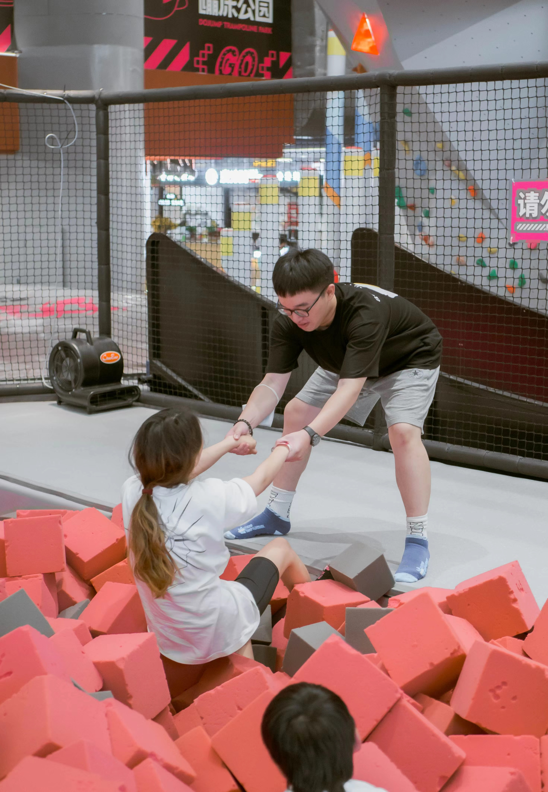
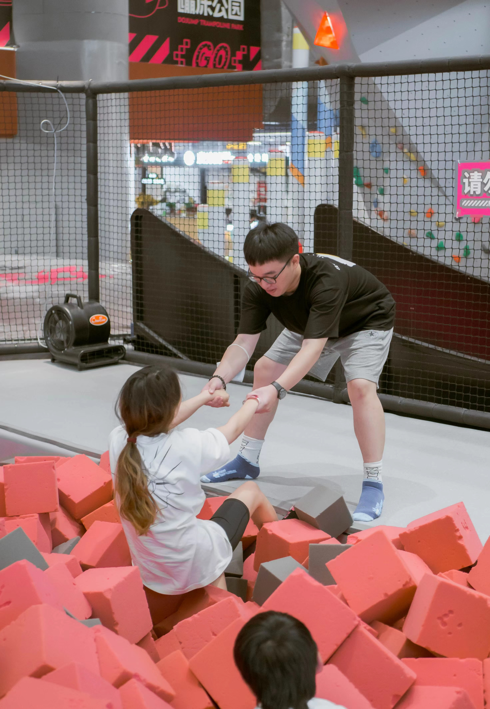
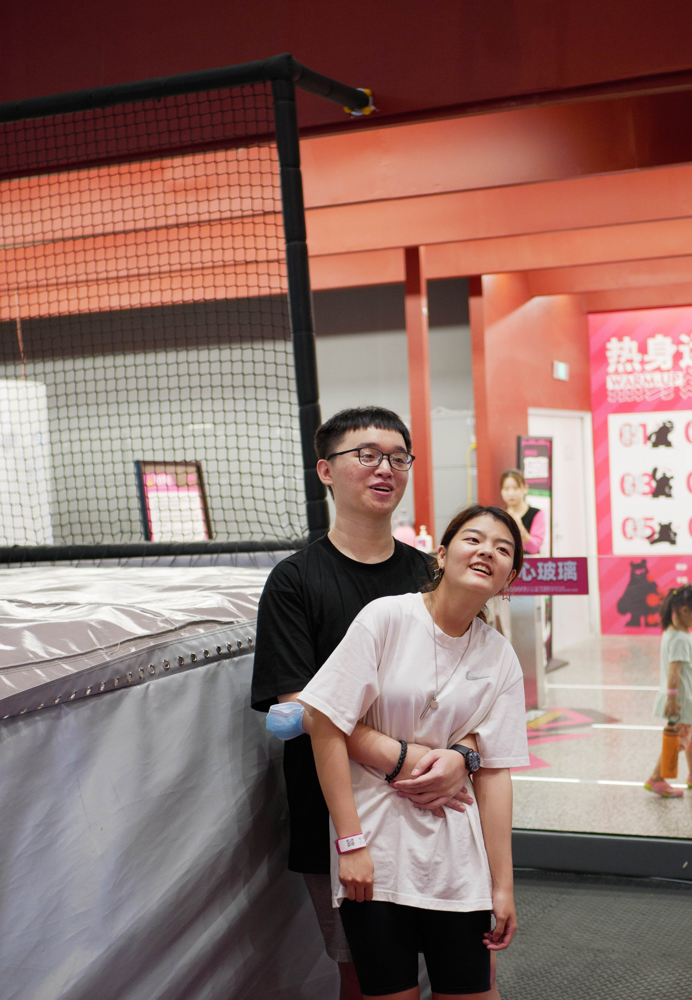
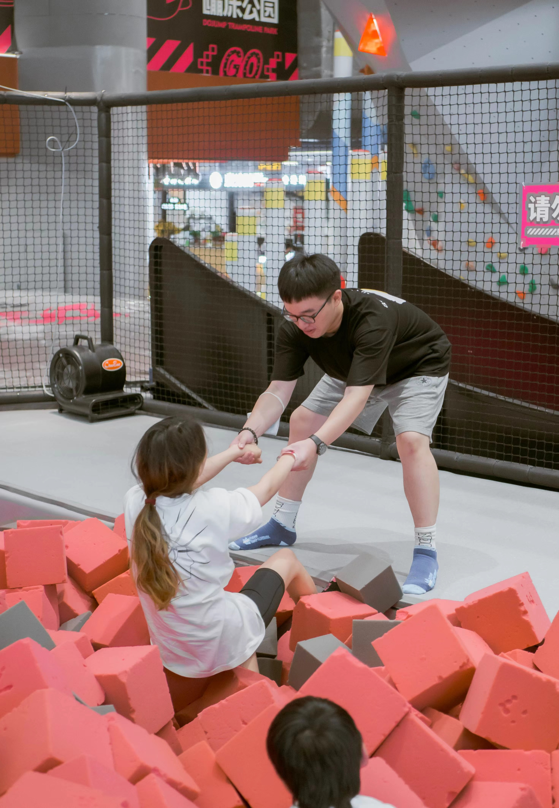
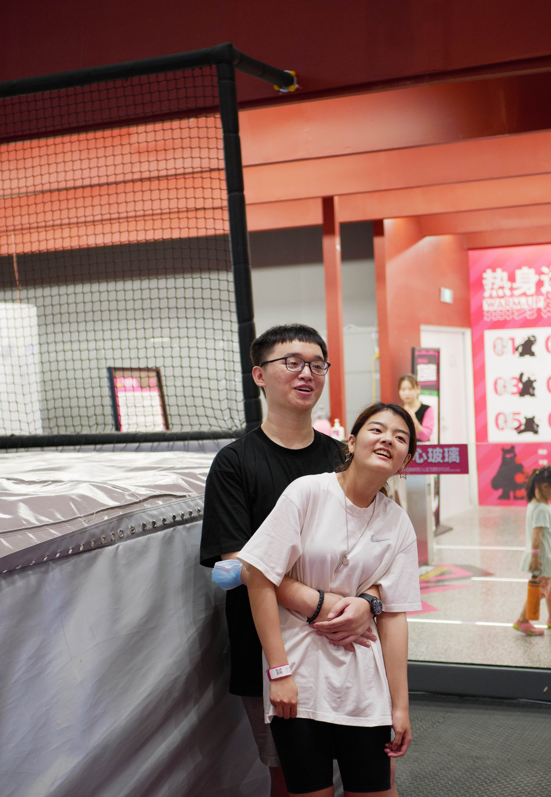

Boqian Mao
design websites for Civikids and Cross-Culture, two non-profit organizations. In these two organizations that I worked in, I have known a lot about how a website educates kids about voting and promotes the exchange of different cultures.
Civikids is focused on increasing political awareness through its voter education curriculum. Many immigrants are not fully educated about the U.S. electoral system. Civikids aims to make these future voters fully aware of the electoral mechanism. Another website I worked on, Cross-culture, is an organization that wants to bridge the Chinese-American community with the African-American and Hispanic-American communities. It designs its own curriculum on Chinese language and culture to teach the kids with different cultures. Both of these websites’ operators of the website don't want to make any money through this website. Because of that, we mainly recruit students from nearby communities as volunteers. Managers from different departments will assign suitable jobs to volunteers to achieve the purpose of establishing the organization. I always feel surprised that I can improve my management ability, knowledge by reading the article, and pride and happiness from helping others. Because of these reasons, I change the view that the website can only be used for commercial purposes, meanwhile, we can also use the website to do more meaningful things, like education, culture exchange, etc.
I went to charity parties to help raise money for the Franklin Foundation which works to offer educational support for autistic children. At the party, I helped sell student and amateur paintings and raise almost $2500. During the event, I also played games and read books with autistic children as well. As I was wiping down the last table in the auditorium, I heard a little voice behind me say, "I had a good time with you today! Thank you lots!" It was the end of my first charity party to help raise money for autistic children. The child's words swept away the tiredness of my busy night. Since then, I’ve realized the need to protect and support our community at all levels.
Experience
Web Developer
• Developed websites for Civikids
• Experience with HTML, CSS, Javascript, Photoshop
Web Designer
• Design the web for the nonprofit organization
• Promotion Crossculture in the community
Chef of Teaching material
• Create teaching material every week
• Send tasks to members
• Created educational content to help promote student education
Education
UC Riverside
San Marino High School
Portfolio
.jpg) 



